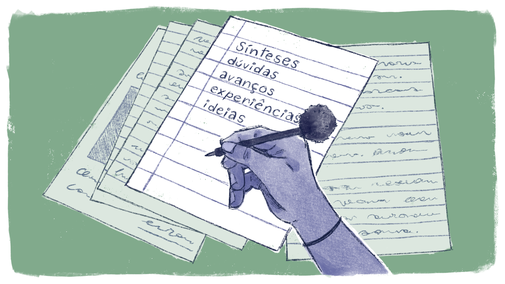

Elaborando o seu Memorial
Por fim, essa trajetória levará você a desenvolver o seu Memorial, que é:
Uma espécie de “diário de bordo”, caracterizado como uma atividade de aprendizagem a ser elaborada na articulação com as Unidades Temáticas e é uma atividade em que o/a cursista registrará o seu percurso formativo, reflexões, problematizações, achados, experiências vivenciadas etc. Trata-se também de uma estratégia de comunicação necessária entre a tutoria e os/as cursistas. É um meio para o/a estudante expressar sua história durante o seu processo formativo. Nele o/a cursista deve resgatar a relação com aprendizagens anteriores, valores, cultura e, sobretudo, conduzir uma reflexão sobre os aprendizados nas Unidades Temáticas e suas experiências vivenciadas, sobretudo, nas relações com a sua prática em sala de aula.
Ou seja, nesse momento, você constrói o seu Plano de Formação, que será compilado no seu Memorial e que terá como resultado o seu Trabalho de Conclusão de Curso, em forma de Relatório de Formação.
No Memorial, você registrará suas sínteses, dúvidas, avanços, experiências e ideias desenvolvidas, tanto no curso quanto na sua atividade profissional cotidiana. É importante lembrar que, no processo de formação, o estudo e a reflexão se desenvolvem de forma articulada ao cotidiano profissional de cada um. Assim sendo, esse percurso é, ao mesmo tempo, individual e coletivo. Individual porque cada um olha para a sua realidade profissional de forma específica, e coletivo porque, ao estudar, debater e buscar possíveis soluções no coletivo, aprende-se muito.

Título: A escrita presente no seu Memorial de Formação
Fonte: Prosa (2024k).
Enquanto registro do percurso que você fará neste curso, sugerimos alguns passos para a elaboração do seu Memorial:
.png)
Título: Elaboração contínua do seu Memorial de Formação
Fonte: Prosa (2024l).